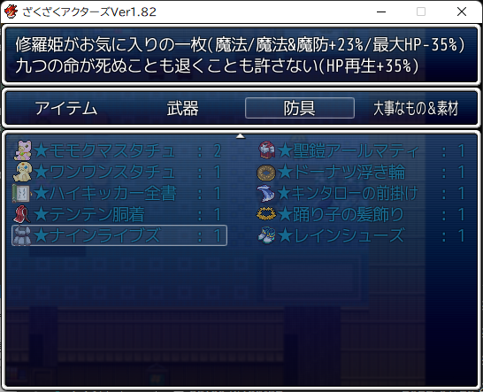
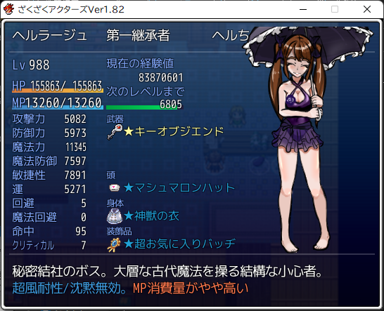
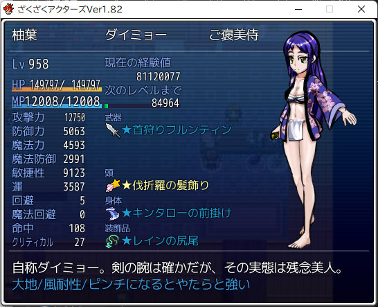
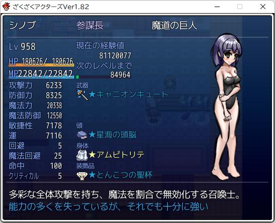
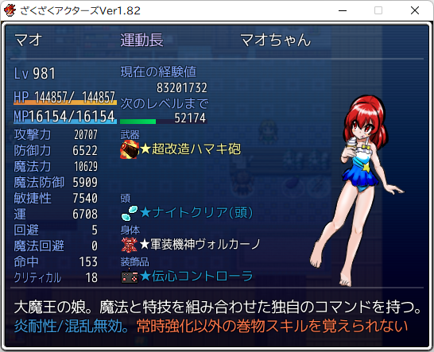
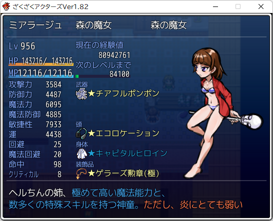
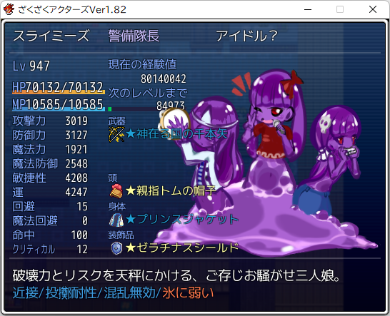
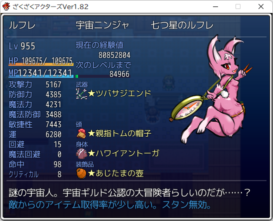
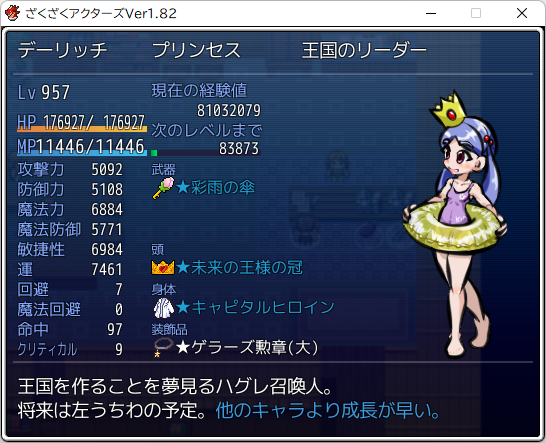

ざくざくアクターズ Ver1.82 クリア
Exレインと修羅姫に勝てたので最終パーティを公開。


ヘルラージュ。サポーター。
今気づいたが、瞑想ルームのボーナス調整用の超お気に入りバッヂをつけたまんまだ……。
回復役、禍神やタイガーズ・アイなどのバフ役、虹色パレットのデバフ役と役割過多になってしまった。
雑魚戦ではヘルズラカニトの即死率が思いの外高くて重宝した。
メイン技のTP消費量が多くて本編では全然使用してなかったが、TP補充の手段が豊富になる水着イベント以降で強さに気づいたキャラ。

柚葉。サブアタッカー。
水着Exイベントは雑魚でも火力が段違いなのでピンチ時ほど強いこいつが活躍するのではないかと後半から採用したが、別にそんなことはなかった。
魔法防御力の低さを見てもらえれば分かる通り、敵の攻撃があたったらだいたい死ぬし。
おれみたいな脳筋プレイヤーには使いこなせないので、素直にマリオン、レプトス、ヅッチー、エステルあたりの高火力アタッカーを代わりに採用したほうがいい。

シノブ。メインアタッカーその1。参謀長。
参謀長スキルの開幕セドナが強い。雑魚はこれで一掃でき、運ステータスが高ければ修羅界の雑魚にも即死 or 麻痺が通る。
本格採用したのはオーロラガラス以降なのに、強さに惹かれてドーピングを注ぎ込み、いつのまにかパーティの中でステータスが一番高くなってたキャラ。
やることはクロックアップしてセドナインストールして適当にシャボンフリーズ打つ（たまにセドナ）だけなので、ゼニヤッタとかでもいい。てか氷ブーストの量的にそちらのほうがたぶん強い。

マオ。メインアタッカーその2。運動長。
魔王タワーで仲間にして以降はほぼスタメン。マオ、エステル、ヴォルケッタ、ベロベロス or ニワカマッスルとかいう頭悪そうな脳筋炎パーティ組んでた時期もあった。
レベル1スキルのくせに二連で会心が乗るイブリースブレードが馬鹿みたいに強いので、これを打ってるだけで敵が沈んでいく。

ミアラージュ。サポーター。
魔王やタイガーズ・アイなどのバフ役、ゲラーズによるTP補充係、虹色パレットのデバフ役。ヘルラージュとだいぶ被ってる。
シノブが育ちきってなかった頃は参謀長にして開幕デスこっくりさんで雑魚を一掃していた。
魔王降ろしは打つ余裕があまりなかった気がするので、ヤエとかに変えたほうがいいかもしれない。

スライミーズ。警備長。万年ベンチ。
警備長スキルの投擲耐性・混乱無効が強いという理由だけで採用。
ちゃんと育てたらたぶん真っ当に強い。

ルフレ。サポーター。
ダブルアクションとノーフューチャーを適当に打ってるだけで強い。なんならダブルアクションだけでも強い。
あとは敏捷性の高さを活かしてアタッカーにチート料理食わせたり。

デーリッチ。王。本編の活躍を見るに、たぶん覇王色の覇気持ち。
パンドラとゲラーズ役。いつのまにか魔力インフレに置いていかれていたので、リカバー役はヘルラージュに取って代わられた。
今振り返るといてもいなくてもいい立ち位置なので、ニワカマッスル or ジュリアの盾役とか他のサポーターを連れて行くほうが安定しそう。
雑なまとめと作品に対する感想
- こんなガタガタパーティでよくExレインと修羅姫倒せたな。
- ちなみにサポーターはレナ、パイン王子、レズ、ヒナヒナ。
- ツハコの冷たい視線のイラスト、あれは駄目でしょ。なにかに目覚めそう。
- オーロラガラスあたりから敵がインフレして自慢のニワカマッスルさえも屠られるので、「これからは殺るか殺られるかや」という精神になって盾役はずしちゃった。
- 水着Exイベントは即死をばらまく敵が多かったり、修羅姫が炎弱点ではないアンデッドだったり、強い対アンデッド技・武器が露骨にばらまかれてたりでアルフレッドがようやく輝きそう。
- おれは使わなかったけど。
- おそらくだいたいのプレーヤーはアルフレッドを使ってない。
- 会心アップ手段が増えたりしたせいでジーナも相対的に弱体化した気がする。この姉弟は……。
- いや、おれがちゃんと使ってなかっただけで実は普通に強いのか？
- 超強敵のBGMがかっこいい。とくにレイン。こちらはマリオンとかと違って書き下ろし曲ではないみたいだけど。
- ギャグパートとシリアスパートの温度差が激しいのが気になったけど、そこ以外はめちゃおもしろかった。
- 勝手に召喚されて用済みになったらポイされた異世界人たちが国を作っていくっていう設定や物語がSF的にもいい。
- あまり使わなかったキャラを中心にパーティ組んで2週目プレイとかしたいけど、ニートをやめてしまったのでそんな余裕ないのが残念。